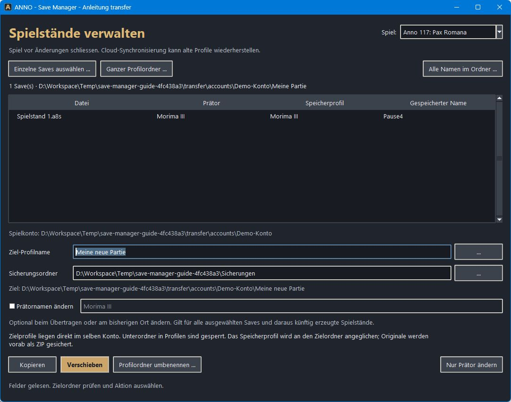
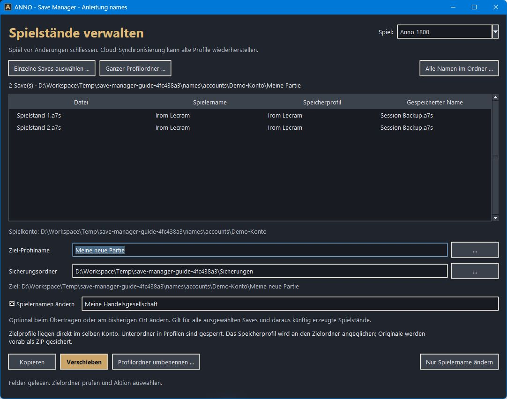

Spielstände verschieben, Profilordner umbenennen und Prätor-/Spielernamen ändern – für Anno 117 und Anno 1800. Die Bilder zeigen isolierte Beispieldaten. Deine Ordner und Namen können anders aussehen. Ein Klick auf ein Bild öffnet es in voller Grösse. Die Programmoberfläche ist Deutsch; diese Anleitung gibt es auf Deutsch und Englisch.
1. Herunterladen und vorbereiten
Auf der Downloadseite AnnoSaveManager-<Version>-windows-x64.zip herunterladen. Im Explorer mit der rechten Maustaste auf die ZIP-Datei klicken und Alle extrahieren… wählen. Den vollständigen entpackten Ordner einschliesslich _internal behalten und AnnoSaveManager.exe öffnen. Python ist nicht nötig. Die Datei save-manager-guide.html im Programmpaket öffnet diese Anleitung auch ohne Internet. Fehlt sie in einem älteren Paket, verwende die Online-Anleitung.
Vor Änderungen das gewählte Spiel schliessen und eine laufende Cloud-Synchronisierung abwarten. Erkennt der Save Manager einen laufenden Spielprozess, zeigt er eine Meldung und lässt keine Bearbeitung zu. Die Cloud-Synchronisierung erkennt er nicht; sie kann alte Dateien oder Ordner wiederherstellen.
2. Spiel und Quelle auswählen
Oben rechts Anno 117: Pax Romana oder Anno 1800 wählen. Einzelne Saves auswählen … öffnet die Dateiauswahl: einen Save oder mit gedrückter Strg-Taste mehrere Saves desselben Profilordners markieren. Anno 117 verwendet .a8s, Anno 1800 .a7s. Für einen ganzen Ordner stattdessen Ganzer Profilordner … wählen.
Ein Profilordner enthält die Saves einer Partie und liegt direkt unter deinem Kontoordner. Der Kontoordner enthält ausser den Profilordnern auch die accountdata-Datei. Diese Datei und den Kontoordner selbst nicht als Quelle auswählen. Der Save Manager merkt sich das erkannte Konto pro Spiel; spätere Auswahldialoge starten wieder dort.

Die Tabelle zeigt die ausgewählten Saves und ihre bisherigen Namen. Ziel-Profilname ist der Name des Ordners für die Partie. Der Prätor-/Spielername bezeichnet deine Figur bzw. Firma. Der Dateiname bezeichnet einen einzelnen Save. Diese Namen haben unterschiedliche Aufgaben.
3. Einzelne Saves kopieren oder verschieben
Nach der Dateiauswahl bei Ziel-Profilname den gewünschten Profilordnernamen eingeben, zum Beispiel Meine neue Partie. Über … daneben kannst du einen vorhandenen Profilordner desselben Kontos auswählen. Ein neuer Zielordner wird automatisch angelegt. Unter Ziel den vollständigen Zielpfad prüfen; bei Sicherungsordner steht der Ort für die automatische ZIP-Sicherung.
- Kopieren: Die ausgewählten Saves kommen ins Zielprofil; die Quelldateien bleiben erhalten. Das eignet sich zum ersten Ausprobieren.
- Verschieben: Die ausgewählten Saves kommen ins Zielprofil und werden nach geprüfter Ausgabe aus dem Quellprofil entfernt. Nicht ausgewählte Saves bleiben dort.
Die gewünschte Schaltfläche anklicken, die Zusammenfassung prüfen und bestätigen. Bestehende Zieldateien werden nicht überschrieben. Bei gleichem Dateinamen ein anderes Ziel wählen oder den Konflikt vorher bewusst im Explorer lösen. Die internen Profilfelder werden passend zum Zielordner gesetzt, damit neue Saves wieder dort landen. Der Dateiname und der interne Name des übertragenen Saves bleiben erhalten.
4. Einen ganzen Profilordner umbenennen
Ganzer Profilordner … anklicken und den bisherigen Profilordner auswählen. Alle darin enthaltenen Saves erscheinen in der Tabelle. Bei Ziel-Profilname den neuen Namen eingeben; der vorausgefüllte Vorschlag <bisheriger Name> - Neu ist zum schnellen Ersetzen markiert.
Profilordner umbenennen … anklicken, die Zusammenfassung prüfen und bestätigen. Der Name aus dem Feld wird direkt verwendet; ein zweiter Namensdialog ist nicht nötig. Der neue Ordnername muss frei sein. Alle Saves erhalten passende interne Profilfelder. Enthält der Quellordner weitere Dateien oder Unterordner, wird diese Aktion abgelehnt.
Keine Unterordner anlegen: Profilordner müssen direkt unter dem Konto liegen. In Ziel-Profilname nur einen Namen wie Meine neue Partie eingeben, keinen Pfad wie Sammlung/Meine Partie. Verschachtelte Profile können im Spiel unsichtbar werden; deshalb sperrt der Save Manager solche Quellen und Ziele.
5. Prätor- oder Spielernamen ändern
Für einzelne Saves Einzelne Saves auswählen … verwenden. Danach Prätornamen ändern (Anno 117) bzw. Spielernamen ändern (Anno 1800) anhaken und daneben den neuen Namen eingeben.
Mit Nur Prätor ändern bzw. Nur Spielername ändern werden die ausgewählten Saves am bisherigen Ort bearbeitet. Der Ziel-Profilname wird bei dieser Aktion ignoriert. Wenn du gleichzeitig verschieben, kopieren oder den Profilordner umbenennen möchtest, stattdessen die entsprechende Aktionsschaltfläche verwenden und die Namensänderung angehakt lassen.
6. Den Namen in allen Saves eines Ordners ändern
Alle Namen im Ordner … anklicken und den Profilordner auswählen. Alle passenden Saves werden geladen und die Namensänderung wird bereits angehakt. Den neuen Namen eingeben, Nur Prätor ändern bzw. Nur Spielername ändern anklicken und die Zusammenfassung bestätigen.

Der neue Name gilt für alle angezeigten Saves und daraus künftig erzeugte Spielstände. Dateinamen bleiben erhalten. Nicht ausgewählte ältere Saves behalten ihren alten Spielernamen. Bei mehreren oder nicht eindeutig zuordenbaren menschlichen Spielern wird die Namensänderung abgelehnt. Ordner mit Unterordnern werden für diese Auswahl ebenfalls abgelehnt, damit keine versteckten Saves übergangen werden.
7. Ergebnis und Sicherung prüfen
Warten, bis die Erfolgsmeldung erscheint. Danach sind Auswahl und Namensfelder für die nächste Aktion geleert. Das Spiel starten, einen bearbeiteten Save laden und das manuelle Speicherfenster öffnen. Prüfen, ob Profil und Prätor-/Spielername stimmen und der neue Save im gewünschten Profil landet. Der Namensvorschlag beim manuellen Speichern richtet sich nach dem Speicherprofil; den einzelnen neuen Save kannst du im Spiel anders benennen.
Vor jeder Bearbeitung entsteht im angezeigten Sicherungsordner eine geprüfte ZIP-Sicherung der ausgewählten Originale mit einem SHA-256-Manifest. Standardmässig liegt sie im Windows-Benutzerordner unter AppData/Local/AnnoOrganizer/save-backups. Die Sicherung bleibt auch nach erfolgreicher Bearbeitung erhalten.
Für eine Wiederherstellung Spiel schliessen und Cloud-Synchronisierung beachten. Die passende ZIP anhand von Datum und Manifest auswählen, zunächst in einen separaten Ordner entpacken und die Original-Saves den im Manifest angegebenen Quellpfaden zuordnen. Nach einer Profilumbenennung den ursprünglichen Profilordner bei Bedarf direkt unter dem Konto wieder anlegen. Erst dann die Originale zurückkopieren; vorhandene Dateien vor einem bewussten Ersetzen separat sichern.
| Wenn etwas nicht klappt | Das hilft |
|---|---|
| Das Spiel läuft noch | Das gewählte Spiel vollständig schliessen und die Aktion erneut starten. |
| Unterordner oder ein Pfad im Zielnamen werden abgelehnt | Einen direkten Profilordner unter dem Konto und einen einfachen Zielnamen verwenden. |
| Der Profilordner enthält weitere Dateien | Einzelne Saves auswählen; zum Umbenennen einen Ordner verwenden, der ausschliesslich passende Saves enthält. |
| Der Spielername ist nicht eindeutig | Die Aktion wird zum Schutz der Daten abgelehnt. Den Namen im Spiel ändern. |
| Alte Profile erscheinen wieder | Cloud-Synchronisierung und das zuletzt gespeicherte Profil im Spiel prüfen. |
Weitere Details: Technische Dokumentation und geprüfte Save-Felder. ANNO - Save Manager gehört zu AnnoOrganizer von Morima79, MIT-Lizenz; Verwendung auf eigene Gefahr.